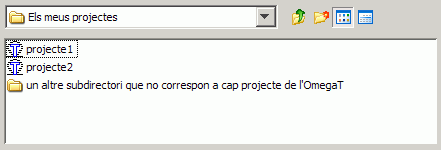

Fitxers i directoris de l'OmegaT
L'OmegaT treballa amb tres tipus de fitxers.
- Fitxers del projecte de traducció: Formen un projecte de traducció. Si els perdeu, pot afectar la integritat del projecte i la capacitat d'acabar una feina. Els fitxers del projecte són els fitxers més importants de l'OmegaT. Són els fitxers amb els quals treballareu diàriament durant la traducció.
- Fitxers de configuració de l'usuari: Es creen quan modifiqueu el comportament de l'OmegaT mitjançant la configuració de preferències, accessible per a l'usuari. Si els perdeu, normalment farà que l'OmegaT torni a la configuració per defecte. A vegades, això pot provocar algun problema si us trobeu enmig d'una traducció.
- Fitxers de l'aplicació: S'inclouen amb el paquet que heu baixat, i la majoria són necessaris per tal que l'OmegaT funcioni correctament. Si per algun motiu es perden aquests fitxers, baixeu l'OmegaT i torneu-lo a instal·lar per tal de restaurar-los.
Fitxers del projecte de traducció
Un projecte de traducció de l'OmegaT està format per una sèrie de fitxers i directoris.
Ubicació dels fitxers del projecte de traducció
Quan creeu un projecte de traducció, l'OmegaT automàticament crea una llista de directoris, que més endavant servirà de dipòsit de fitxers, així com una sèrie de fitxers que s'utilitzaran per establir algunes preferències del projecte i per mantenir la memòria de traducció del projecte. Per defecte, els directoris d'un projecte de traducció es troben agrupats dins d'una carpeta de projecte principal. Podeu escollir altres ubicacions alternatives per als directoris durant la creació del projecte o durant la traducció. D'aquesta manera, és possible seleccionar directoris ja existents o crear directoris en ubicacions que reflecteixin la vostra manera de treballar. Per canviar la ubicació dels directoris un cop ja heu creat el projecte, seleccioneu Projecte → Propietats... i feu els canvis necessaris.
Llista dels fitxers del projecte de traducció
Al diàleg de fitxer que obre l'OmegaT, un projecte de traducció es mostra com un fitxer amb una icona de l'OmegaT associada. Vist amb un navegador de fitxers, un projecte de traducció es veu igual que una carpeta normal i corrent.

Per obrir un projecte de traducció, simplement cal seleccionar l'element amb la icona de l'OmegaT. Un projecte de traducció Exemple_Projecte creat amb la configuració per defecte es crearà com a una subcarpeta nova amb l'estructura següent:
En iniciar un projecte nou, la subcarpeta dels glossaris (glossary) serà buida. Aquí s'hi col·loquen els glossaris, si en teniu algun disponible per al projecte.Omegat
- La subcarpeta omegat contindrà com a mínim dos fitxers: el fitxer de memòria de traducció project_save.tmx (...) i el fitxer d'estadístiques project_stats.txt (...). El fitxer project_save.tmx és la memòria de traducció de treball per al projecte. Amb la funció de desament automàtic activada, s'actualitzarà automàticament en sortir de l'OmegaT. És la memòria de traducció que s'utilitzarà per crear els fitxers traduïts. En aquesta subcarpeta, posteriorment també s'hi aniran afegint una sèrie de fitxers TMX anomenats project_save.tmx.<data i hora>.bak (...). Són còpies de seguretat de la memòria de traducció del projecte. Se'n crea una cada vegada que obriu un projecte, que reflecteix el contingut de la memòria abans que la sessió actual la modifiqui
- El fitxer stats.txt conté les estadístiques del projecte actual; es pot obrir en una aplicació de full de càlcul i conté informació de recompte de paraules i de segments. La informació és més detallada que la que es mostra a la finestra Fitxers del projecte.
Els fitxers ignored_words.txt i learned_words.txt són fitxers reservats per al verificador ortogràfic en versions posteriors de l'OmegaT.
Source
- La subcarpeta source conté els fitxers que voleu traduir. Podeu especificar una subcarpeta nova i afegir els fitxers al projecte més tard des de la finestra Fitxers del projecte. L'estructura de la carpeta source pot ser qualsevol. Si els fitxers que voleu traduir formen part d'una estructura d'arbre, tan sols cal que n'especifiqueu la carpeta superior i l'OmegaT copiarà tots els fitxers i mantindrà l'estructura d'arbre intacta.
Target
- Si hi ha un projecte obert, en seleccionar Projecte → Crea els documents traduïts tots els fitxers de la carpeta /source/, tant si s'han traduït com si no, es reproduiran aquí amb la mateixa jerarquia de carpetes per tal de reflectir l'estat actual de la traducció. En termes pràctics, l'OmegaT fusiona la informació de traducció desada a /omegat/project_save.tmx amb els documents de partida per tal de generar el contingut de /target/.
Tm
- En aquesta subcarpeta s'hi poden col·Locar les memòries de traducció corresponents a traduccions anteriors. Cal que tinguin el format tmx. Utilitzeu les eines disponibles per tal de transformar-les des d'altres formats. Tingueu en compte que project_save.tmx és la memòria de traducció, que conté el text de partida i la corresponent traducció. No obstant, podeu utilitzar memòries de traducció antigues per tal de trobar els candidats més idonis per als segments sense traduir.
omegat.project
- L'OmegaT crea aquest fitxer automàticament en crear el projecte. Conté els paràmetres del projecte. Els paràmetres que inclou aquest fitxer es poden modificar des de la finestra de propietats del projecte.
- nom_projecte-omegat.tmx (...)
nom_projecte-level1.tmx
nom_projecte-level2.tmx
- Aquests fitxers contenen els segments de partida i els segments traduïts, que corresponen al contingut de la carpeta /source/ en el moment que es va crear (generalment en crear els fitxers traduïts).
Fitxers de l'usuari
Ubicació dels fitxers de l'usuari
Els fitxers de l'usuari es desen en una ubicació separada, per tal que qualsevol versió de l'OmegaT hi pugui accedir. La ubicació depèn de la plataforma que utilitzeu:
|
Windows
|
- 2000 i XP: Documents and Settings\<nom d'usuari>\Application Data\OmegaT
- Vista: Users\<nom d'usuari>\AppData\Roaming\OmegaT
- Altres: <ubicació>\OmegaT (<ubicació> és la ubicació de la carpeta "home" configurada per al Java).
|
-
Linux/Solaris/FreeBSD
|
- <directori de l'usuari>/.omegat (.omegat és un directori; el punt del principi fa que no es mostri si no escriviu
ls -a o una ordre equivalent).
|
- MacOSX
|
- <directori de l'usuari>/Library/Preferences/OmegaT
|
- Altres
|
- <directori de l'usuari>
|
Llista dels fitxers de l'usuari
- log.txt
|
- En aquest fitxer s'hi registren els missatges d'error del Java mentre s'està executant l'OmegaT. Si creieu que l'OmegaT està funcionant incorrectament, és important que inclogueu aquest fitxer o la part rellevant en qualsevol informe d'error.
|
- omegat.prefs
|
- Fitxer XML que conté la configuració de totes les opcions a les quals podeu accedir mitjançant la GUI, així com les dades de posició de la finestra.
|
- filters.conf
|
- Fitxer XML que conté totes les dades que s'han definit a les preferències dels filtres de fitxers.
|
-
segmentation.conf
|
- Fitxer XML que conté totes les dades que s'han definit a les preferències de la segmentació per frases.
|
Fitxers de l'aplicació
L'OmegaT es distribueix com un paquet que podeu baixar des de SourceForge. En aquest capítol, es farà referència al paquet independent de la plataforma que conté l'aplicació en un format Java estàndard. Els altres paquets inclouen un paquet .tar per al Linux, un instal·lador per al Windows -amb un entorn d'execució de Java o sense-, un instal·lador per al MacOSX i un paquet amb el codi font per als desenvolupadors. Aquest paquet independent de la plataforma es pot utilitzar en qualsevol plataforma que tingui instal·lat un entorn d'execució de Java 1.4.2, que també inclou les plataformes per a les quals hi ha un paquet específic. El paquet independent de la plataforma es distribueix com un fitxer comprimit que, per instal·lar-lo, heu de descomprimir a la carpeta que vulgueu. Generalment, podeu descomprimir-lo fent doble clic al paquet que heu baixat. Un cop descomprimit, s'haurà creat una carpeta amb el següent contingut:
|
Fitxer/
subcarpeta
|
Contingut
|
| /docs/ |
- Conté tots els fitxers del manual d'usuari. Podeu obrir-los en un navegador web per accedir als enllaços externs.
|
- /images/
|
- Conté les icones i els gràfics del logotip.
|
- /lib/
|
- Conté els fitxers del Java. Són necessaris per tal que l'OmegaT funcioni correctament.
|
- join.html
|
- Es tracta d'un fitxer HTML normal que, en obrir-lo amb el navegador web, us redirigirà al grup d'usuaris de l'OmegaT del Yahoo Groups. Tot i que no cal que us hi subscriviu, si ho feu podreu accedir a alguns serveis addicionals, com l'accés a alguns fitxers i a enquestes, i també podreu participar als debats relacionats amb l'OmegaT. L'arxiu de missatges del grup és públic i per consultar-lo no cal que us hi subscriviu.
|
- changes.txt
|
- Un fitxer que conté una llista detallada de les modificacions realitzades entre aquesta versió i les anteriors.
|
- license.txt
|
- La Llicència Pública General GNU. Aquesta llicència us permet fer diverses coses amb l'OmegaT, incloses la modificació i la distribució. Si esteu interessat en modificar o distribuir l'OmegaT, llegiu detingudament aquest document i assegureu-vos que, abans de fer res, en coneixeu totes les implicacions. En cas de dubte, pregunteu als membres del projecte directament enviant-los un missatge de correu des de la pàgina de SourceForge o enviant un missatge de correu públic al grup d'usuaris.
|
- doc-license.txt
|
- La Llicència Pública General GNU. Aquesta llicència cobreix la documentació. Vegeu-ne la descripció més amunt.
|
- readme.txt
|
- Aquest fitxer és molt important i cal que el llegiu abans d'iniciar l'OmegaT. Conté informació general sobre l'OmegaT, on podeu trobar més informació, com hi podeu contribuir, etc. Aquest fitxer s'ha traduït a diverses llengües.
|
- OmegaT
|
- Un fitxer de text que conté dues línies:
#!/bin/bash
java -jar OmegaT.jar $*
Aquest fitxer us pot ser útil si el convertiu en executable (chmod +x OmegaT) des de la línia d'ordres i dins del directori /OmegaT_1.8/. A partir d'aquest moment, podreu iniciar l'OmegaT cridant aquest fitxer des de la línia d'ordres.
|
- OmegaT.bat
|
- Un fitxer de lot que s'utilitza per executar l'OmegaT des de la línia d'ordres del Windows. Conté la línia següent:
java -jar
OmegaT.jar %*
|
- OmegaT.jar
|
- L'aplicació principal de l'OmegaT. Per executar l'OmegaT, o bé crideu aquest fitxer des de la línia d'ordres o executeu-lo des del gestor de fitxers (normalment, fent-hi doble clic).
|